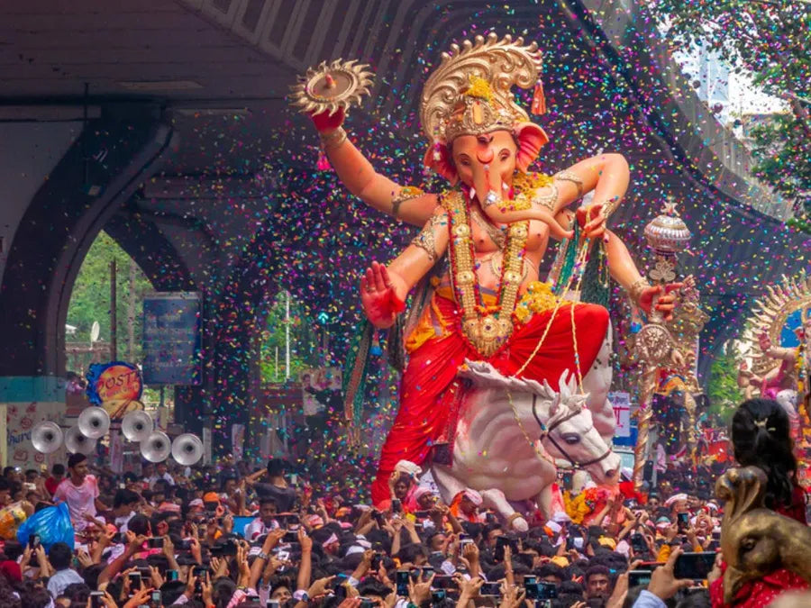
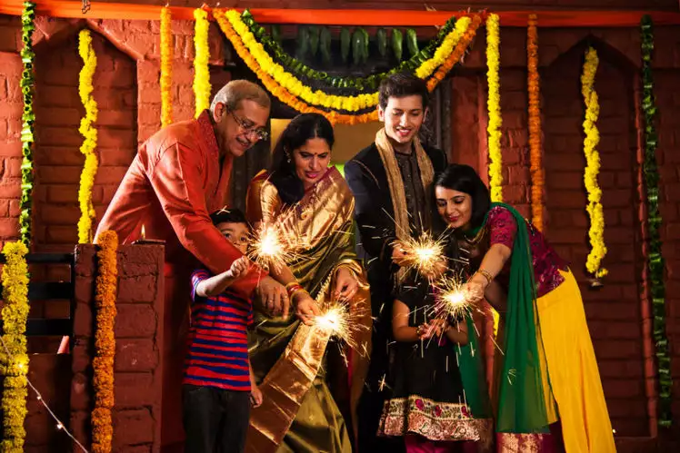
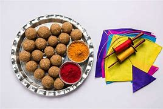
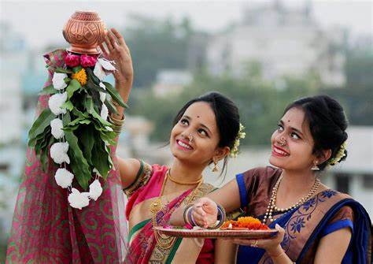
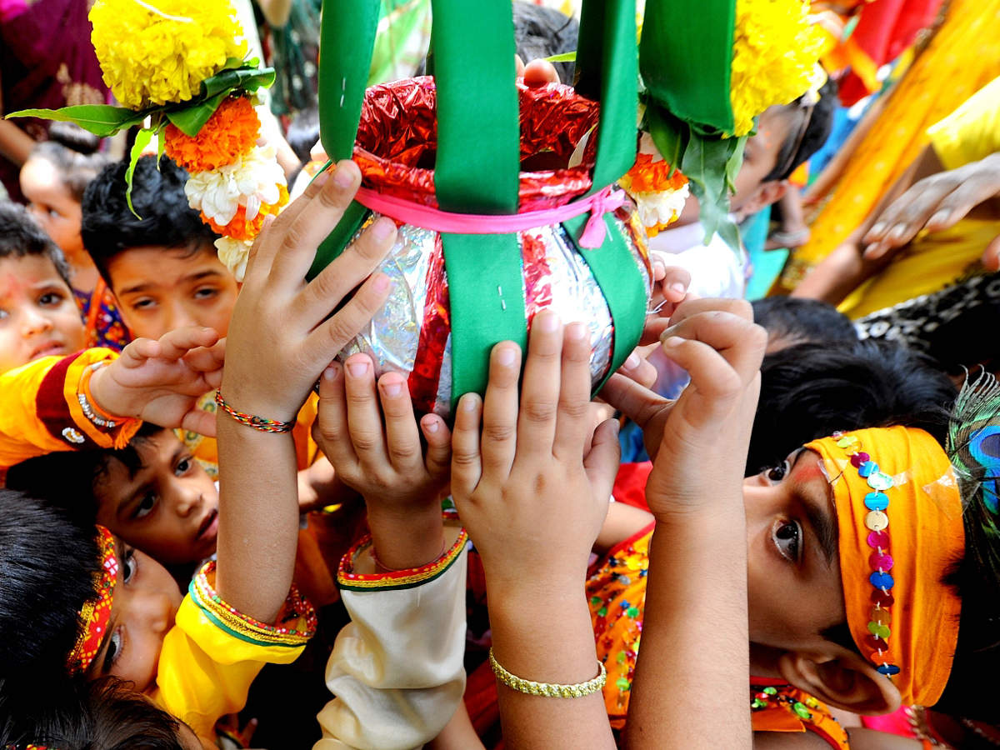
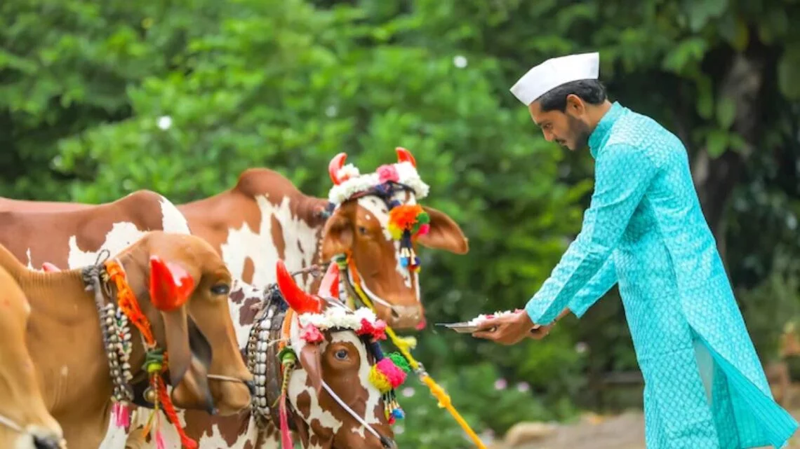

Maharashtra, with its rich cultural heritage and diverse population, celebrates a wide array of festivals throughout the year. These festivals reflect the traditions, customs, and religious beliefs of the people.
Religious Festivals
Chaturthi:
Ganesh Chaturthi is a vibrant celebration that showcases devotion, artistry, and community bonding. It reflects the rich cultural tapestry of Maharashtra, emphasizing the values of faith, creativity, and togetherness.
The festival not only honors Lord Ganesha but also serves as a reminder of the importance of new beginnings and overcoming challenges.
Diwali:
Diwali is a vibrant celebration that brings together traditions, family bonds, and a sense of community. It embodies the values of hope, joy, and renewal, making it one of the most cherished festivals in Maharashtra and throughout India.
The festival's emphasis on light symbolizes the triumph of goodness, making it a source of inspiration and positivity for people of all ages.
Makar Sankranti:
Makar Sankranti is a vibrant festival that embodies the spirit of gratitude and community. It celebrates the bounty of nature and the joy of togetherness, with activities like kite flying adding a festive touch.
The festival not only marks a change in season but also fosters social connections and cultural exchange



Cultural Festivals
Gudi Padwa:
Gudi Padwa is a vibrant festival that reflects the rich cultural heritage of Maharashtra. It symbolizes new beginnings, prosperity, and community spirit, bringing families and friends together to celebrate life and hope for the year ahead.
The festivities embody the values of joy, gratitude, and renewal, making it a cherished occasion for Maharashtrians.
Dahi Handi:
Dahi Handi is a lively celebration that captures the spirit of teamwork, joy, and devotion associated with Lord Krishna. It fosters a sense of community and cultural identity, making it one of the most cherished festivals in Maharashtra.
The festival not only reflects the playful nature of Krishna but also brings people together in a shared celebration of heritage and tradition
Bail pola:
Bail Pola is a heartwarming festival that celebrates the bond between farmers and their livestock. It highlights the importance of agriculture in rural Maharashtra and honors the hardworking animals that contribute to the farmers' livelihoods.
The festival not only strengthens community ties but also promotes a sense of gratitude towards nature and its resources.


